Investigação, 13/11/2026. Nenhuma linha do programa mudou. Refiz as duas páginas dos seus prints pela conta do programa (a mesma da tela e do PDF), em cópias do livro e do seu projeto, sem abrir janela na sua tela. Rodei também versões antigas do programa e o conserto C, e testei todas as escolhas do painel Filtro em cinco capas. Teste de máquina (medidas) e de olho (abri todas as imagens). Só você aprova.
Os seus prints: 13-01 ("1- novo problema achado no branco e preto") e 13-02 ("2- quadrado branco na capa?").
Cada imagem tem uma faixa por situação: azul = antes da obra (programa de 26/10), laranja = hoje (versão de teste), verde = hoje sem o passo da sombra (simulação numa cópia), roxo = conserto C. O defeito está circulado em vermelho.
O que olhar: 13-01: os retângulos brancos no alto da capa só existem na faixa laranja (hoje); antes da obra e sem o passo da sombra, a capa é preta lisa.
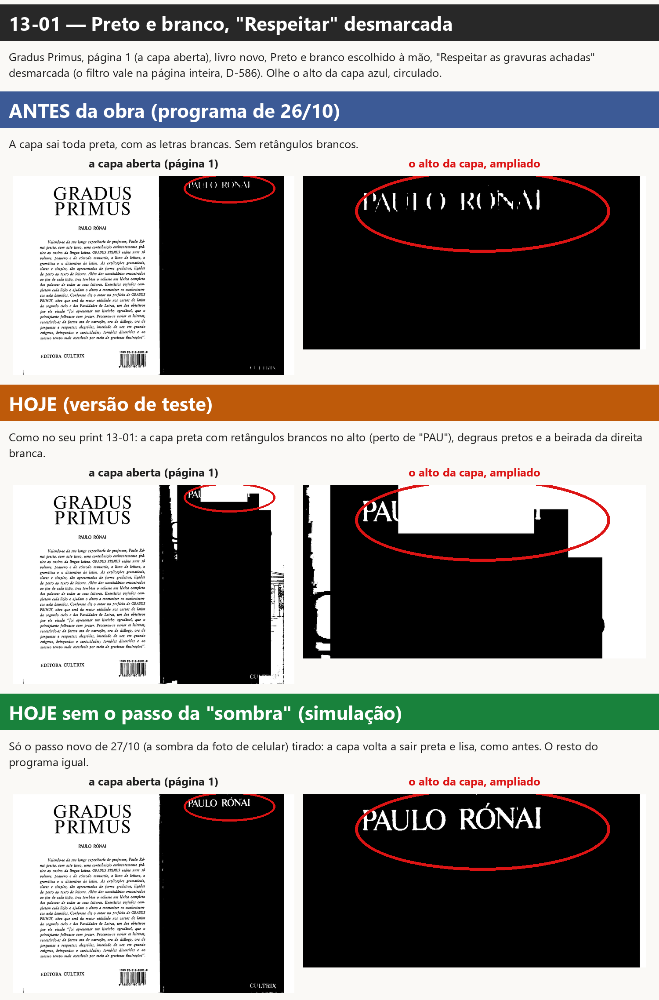
O que olhar: 13-02: a caixa sobre "ÓNAI" era preta antes da obra e ficou branca hoje; tirando o passo da sombra ela volta a ser preta; o conserto C não muda.
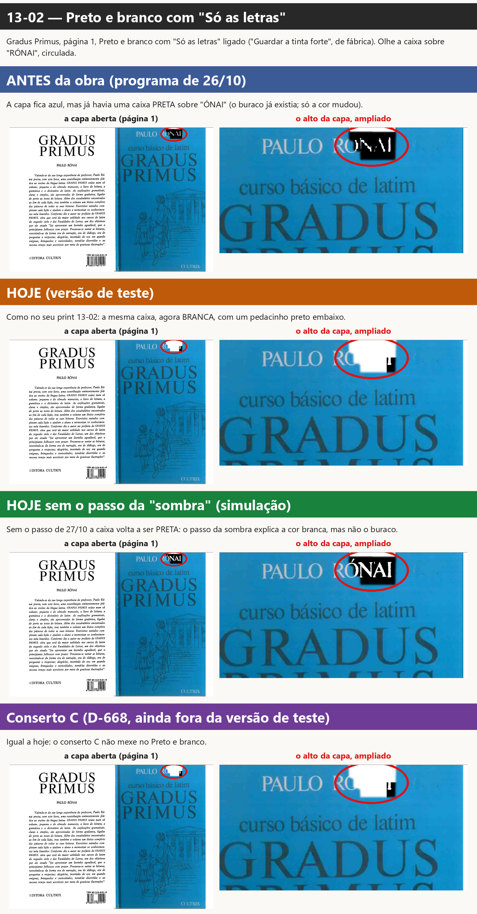
O que olhar: O pedaço "ÓNAI" achado como letra (vermelho) fura a gravura da capa (verde): é ali que o 13-02 abre a caixa.
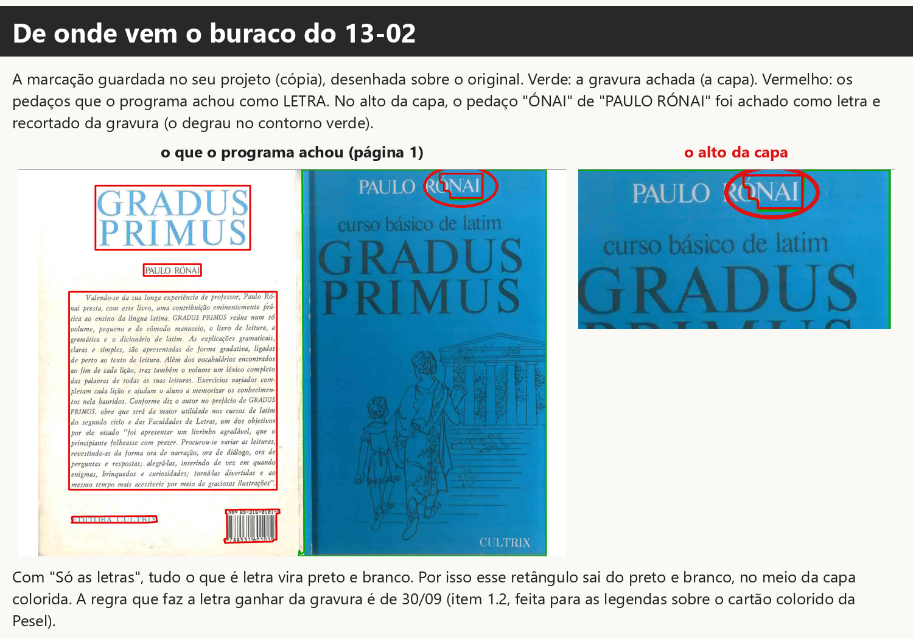
O que olhar: O mesmo retângulo branco na tela, no cartão do filtro e no PDF: não é diferença de tela, sai assim no livro.
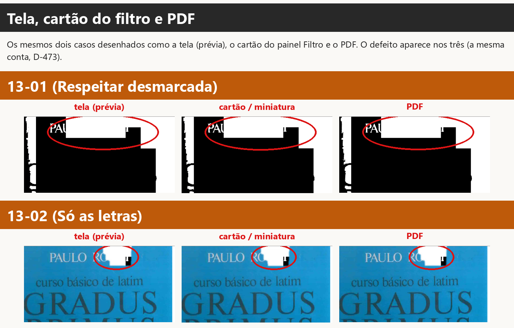
O que olhar: Gradus Primus, capa (p. 1): todas as escolhas como saem no PDF; circuladas as que têm quadrado ou caixa que não existe no original (Auto: Só as letras, Auto: P&B, Resp. não, Auto: P&B, Resp. não + cinza, Auto: P&B, Resp. sim, P&B + Só as letras, Só as letras, Guardar tudo, P&B, Respeitar não, P&B, Resp. não + cinza, P&B, Respeitar sim, P&B, Resp. sim + cinza).
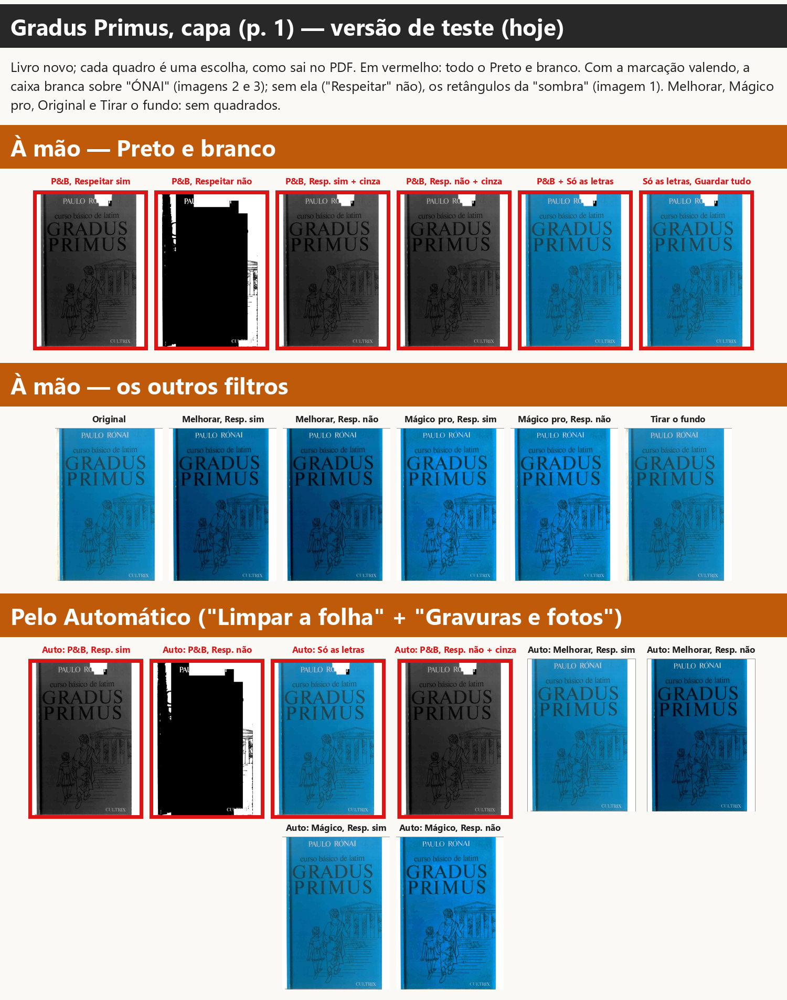
O que olhar: Na escola de Jesus, capa (p. 1): todas as escolhas como saem no PDF; circuladas as que têm quadrado ou caixa que não existe no original (Auto: P&B, Resp. não, P&B, Respeitar não).
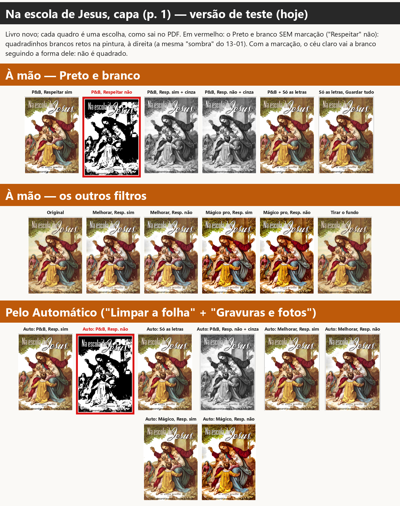
O que olhar: Matemática para vencer, capa (p. 1): todas as escolhas como saem no PDF; circuladas as que têm quadrado ou caixa que não existe no original (Auto: Só as letras, Auto: P&B, Resp. não + cinza, Auto: P&B, Resp. sim, P&B + Só as letras, Só as letras, Guardar tudo, P&B, Resp. não + cinza, P&B, Respeitar sim, P&B, Resp. sim + cinza).
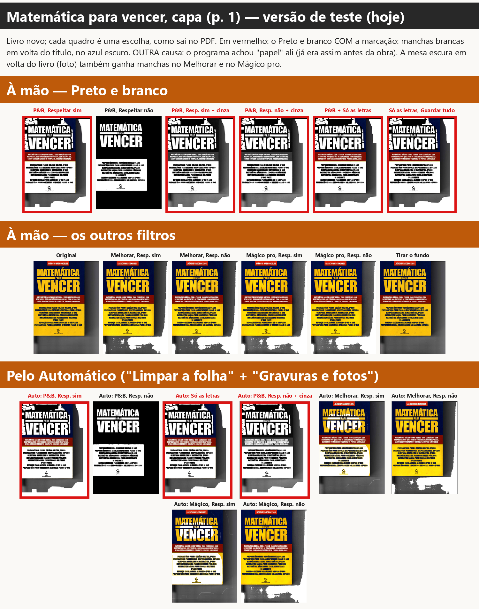
O que olhar: Pesel, capa (p. 1): todas as escolhas como saem no PDF; circuladas as que têm quadrado ou caixa que não existe no original (nenhuma).
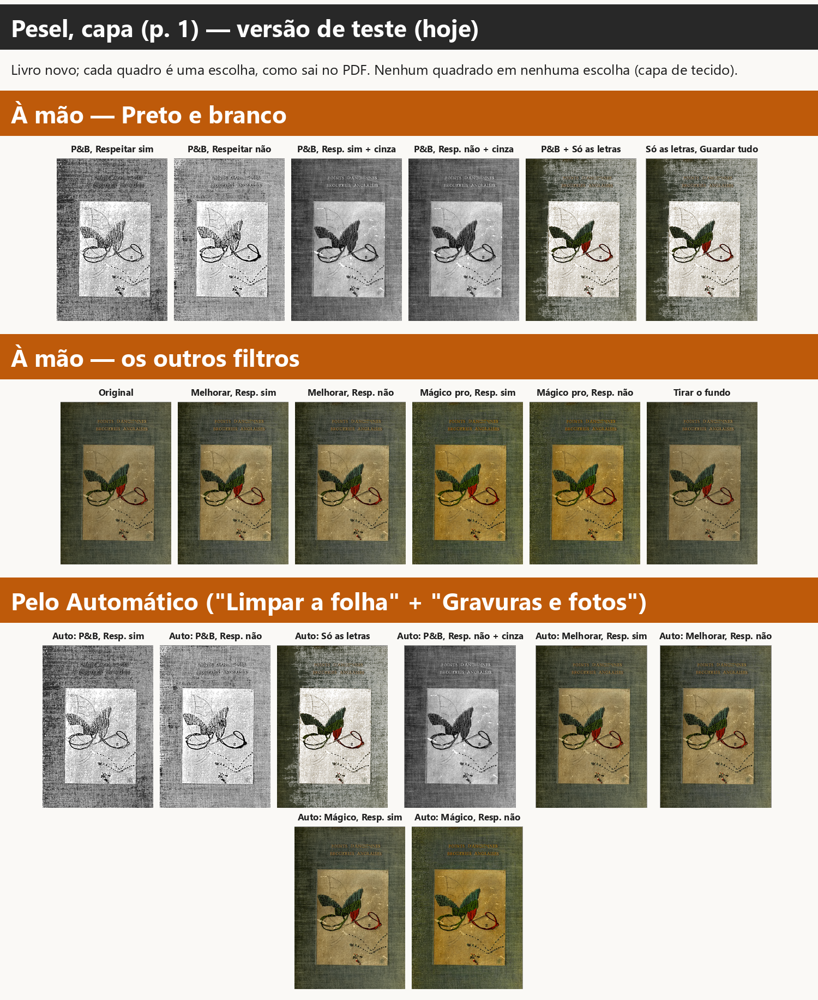
O que olhar: Destino do socialismo, capa (p. 1): todas as escolhas como saem no PDF; circuladas as que têm quadrado ou caixa que não existe no original (nenhuma).
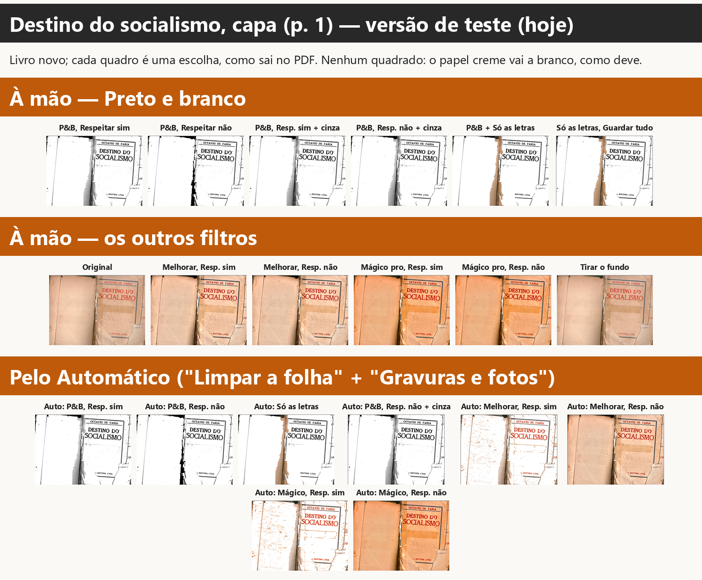
O que olhar: Capa da Escola, Preto e branco sem "Respeitar": os quadradinhos brancos só existem hoje (laranja); antes e sem o passo da sombra, não.
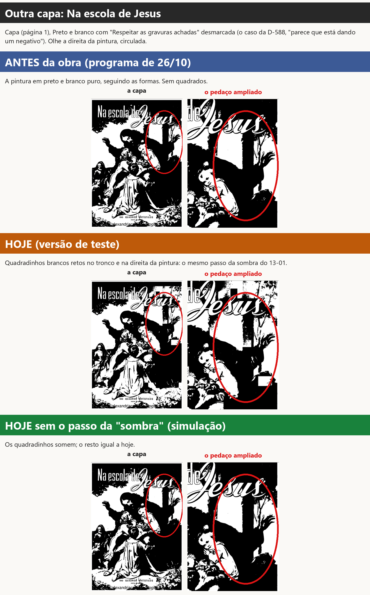
O que olhar: Matemática, Melhorar: o amarelo vira branco quando a marcação vale (Automático hoje; à mão com o conserto C). À mão hoje, fica amarelo.
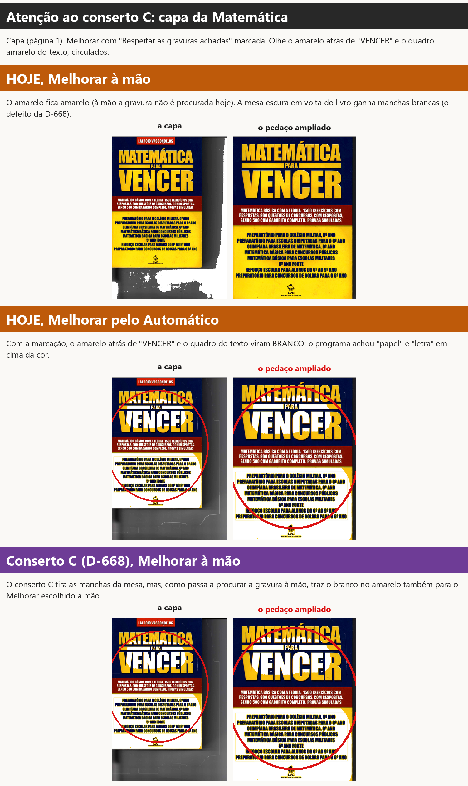
Como você deixou a página (cópia do seu projeto, acoes.jsonl): às 16h09min34s escolheu Preto e branco
(a caixinha "Respeitar" estava marcada, de fábrica); às 16h09min45s e 48s marcou e desmarcou "Gravuras em tons
de cinza"; às 16h09min49s desmarcou "Respeitar as gravuras achadas" (o registro diz: "Respeitar as gravuras
achadas na página 1: desligada", de marcada para desmarcada); às 16h10min02s ligou "Só as letras" (o 13-02). O
programa não desmarcou nada sozinho.
A capa preta é a escolha. Desmarcada, a caixinha manda o filtro valer na página inteira (D-586). No Preto e branco de fábrica, a página é dividida entre tinta e papel por um limite só (o jeito Otsu, que o programa escolheu para esta página). A capa azul inteira fica mais escura que esse limite: vira tinta, preto. As letras claras ("PAULO RÓNAI", "CULTRIX") ficam brancas. Medido: antes da obra, 98,7% da capa sai preta.
Os retângulos brancos são defeito. O passo "sombra da foto de celular" (de 27/10) olha a página em quadradinhos (24 por lado). Onde um quadradinho é mais escuro que o papel (entre metade e 85% da luz dele) e tem "pouca tinta", ele acha que é sombra e refaz o preto e branco ali com a luz igualada. Na capa azul lisa, os quadradinhos do alto (entre "PAULO RÓNAI" e "curso básico") e da beirada passam por sombra e viram branco, em blocos retos. Os que têm o título grande ou o desenho têm muita "tinta" e ficam pretos. Por isso a forma em degraus.
A prova: - o mesmo Preto e branco sem marcação nenhuma (livro em que a gravura nunca foi procurada) sai igual, ponto por ponto, ao do seu caso: a marcação não tem nada a ver com o 13-01; - passo a passo do filtro na capa: depois do limite único, 98,5% da capa está preta; o passo da sombra muda 15,6% da capa (os retângulos); os outros passos mudam quase nada (0,2%); - tirando só a parte dos quadradinhos desse passo (simulação), a capa sai preta lisa; tirando só a parte da "lombada" do mesmo passo, nada muda; - nas versões: antes da obra e logo antes da etapa 10b, a capa sai preta lisa (branco liso na capa azul: 0,05%); a partir do commit da sombra em quadradinhos, 13,2%; hoje, 13,6%.
O buraco. A marcação guardada no seu projeto (imagem 3) tem a capa inteira como gravura, menos um pedaço no alto: o "ÓNAI" de "PAULO RÓNAI", que o leitor de texto achou como letra. Uma regra do detector de gravura (item 1.2, de 30/09: "Legenda impressa sobre a foto continua sendo legenda", feita para as legendas sobre o cartão colorido da Pesel) faz a letra ganhar da gravura e recorta esse pedaço da capa. Com "Só as letras", tudo o que não é gravura vai para o preto e branco. Então esse retângulo sai do preto e branco, no meio da capa azul.
A cor branca. No preto e branco desse retângulo, o azul é escuro (sairia preto) e as letras são claras (sairiam brancas): antes da obra era uma caixa preta com "ÓNAI" em branco (faixa azul da imagem 2). Desde 27/10 o passo da sombra pinta esse azul de branco: a caixa fica branca, com um pedacinho preto embaixo (o pedaço que caiu fora do quadradinho de "sombra"). Sem o passo da sombra (simulação), a caixa volta a ser preta.
"Guardar a tinta forte" não é a causa: com "Guardar tudo" e com "Guardar só o texto" a caixa sai igual.
O retângulo perto de "PAU" no 13-01 é a mesma coisa? É o mesmo passo (a sombra em quadradinhos), mas não o mesmo buraco: no 13-01 a caixinha desmarcada tira a marcação toda, e o retângulo é um dos quadradinhos de "sombra" da capa. No 13-02 só aparece o quadradinho que cai dentro do buraco da letra; o resto da capa fica como gravura (azul).
Não. O conserto C (D-668) mexe no Melhorar e no Mágico pro (procurar a gravura e a limpeza do papel). O Preto e
branco não passa por ali. Rodei os dois casos com o programa do ramo quadrados-c-2026-11-10: as páginas saem iguais
às de hoje (13-01: 13,6% de branco liso na capa azul nas duas; 13-02: a mesma caixa branca). São duas coisas
diferentes: lá era a limpeza do papel do Melhorar; aqui é o Preto e branco.
Testei, na versão de teste, cinco capas (Gradus, Na escola de Jesus, Matemática para vencer, Pesel e Destino do socialismo) com 20 escolhas cada: Original, Preto e branco ("Respeitar" marcada e desmarcada, com e sem "Gravuras em tons de cinza", "Só as letras" com "Guardar a tinta forte" e "Guardar tudo"), Melhorar e Mágico pro ("Respeitar" marcada e desmarcada) e Tirar o fundo, escolhidos à mão e pelo Automático ("Limpar a folha" + "Gravuras e fotos"). Cada uma desenhada como a tela, o cartão do filtro e o PDF. Olhei todas (imagens 5 a 9).
Onde ACONTECE:
Outro defeito, parecido, com outra causa (já existia antes da obra):
Onde NÃO acontece:
Atenção ao conserto C (D-668), que ainda não está na versão de teste: ele faz o Melhorar e o Mágico pro escolhidos à mão procurarem a gravura quando "Respeitar" está marcada. Na Matemática, isso traz para o Melhorar à mão o amarelo branco que hoje só aparece pelo Automático (imagem 11, faixa roxa). Nas outras capas o C não criou quadrado: no Gradus e na Escola a capa sai com o tratamento de gravura (mais clara ou mais forte), sem caixas; no Preto e branco, nada muda (todas as 20 escolhas saem iguais, ponto por ponto). Pela D-605, isso é para você saber antes de juntar o C. (O C não foi testado no Pesel e no Destino: parei para não pesar o PC.)
| o quê | desde | mudança | quem |
|---|---|---|---|
| retângulos brancos no Preto e branco (13-01; a cor branca do 13-02) | 27/10/2026, 12h02 | commit c8844671, "Etapa 10b: [...] sombra da foto de celular", função _sombra_em_quadros em core/filtros.py |
implementador da etapa 10b da obra (ramo obra-etapa10b-2026-10-26); juntado à obra em 27/10, 16h46 (03506fae) |
| a caixa na capa (o buraco do 13-02) | a regra é de 30/09/2026 (item 1.2, Fase 1); conferido que já existia em 26/10 (ddd4d74a) e em ab38208c |
commits 71e14bef e 47cabac8: "a escrita ganha" da gravura do ScanTailor |
implementador do item 1.2; a regra existe para as legendas da Pesel e a pauta do Graduale 222 |
O que o passo de 27/10 queria consertar: a Lista de bugs de 23/10, "Páginas fotografadas (celular): o Preto e branco transforma a sombra da mão ou da página numa grande mancha preta" (Razões do Integralismo 57, Atanásio 8). Esse conserto funciona nessas páginas; o problema é que ele também age em área colorida lisa, que não é sombra.
Conferido nas versões (página 1 do Gradus, Preto e branco na página inteira; branco liso na capa azul):
antes da obra (ddd4d74a, 26/10) 0,05% · logo antes da etapa 10b (ab38208c) 0,05% · 50f03701 (a sombra da
lombada, 27/10 11h45) 0,07% · c8844671 (a sombra em quadradinhos, 27/10 12h02) 13,2% · 7ffba04 12,9% ·
hoje (84b32df8) 13,6% · conserto C 13,6%.
Uma ligação provável com a D-588. Em 29/10 você achou que a capa do Na escola de Jesus no Preto e branco com "Respeitar" desmarcada "parece que está dando um negativo". Isso foi dois dias depois de 27/10, e essa capa tem os mesmos quadrados (imagem da capa da Escola). O "negativo" em si (pintura escura vira preto) é o Preto e branco na página inteira; os blocos brancos em cima dele são deste defeito.
Para os retângulos brancos (o passo da sombra): o passo só trata como sombra o quadradinho sem cor forte.
Medi a cor (saturação, de 0 a 255) dos quadradinhos que ele chama de sombra: nas fotos de celular para as quais ele
foi feito, 39 (Razões 57) e 80 (Atanásio 8) em média; nas capas, 116 (Escola) e 168 (Gradus). Um limite perto de
100 separa os dois casos medidos, mas a margem na Escola é pequena: precisa ser medido em mais páginas antes. A
prova antiga do conserto de 23/10 (test_reversao_foto_de_celular_a_sombra_da_mao_nao_vira_mancha) tem de
continuar passando (D-605), e o teste de reversão novo mede o branco liso na capa azul do Gradus (13,6% hoje, perto
de 0 antes de 27/10).
Para a caixa do "Só as letras" na capa: isso é escolha, não detalhe técnico, então vai como pergunta (abaixo). A regra "a letra ganha da gravura" foi feita para legenda escura sobre cartão claro (Pesel). Aqui é título claro pintado na capa escura. Minha sugestão: com "Só as letras", letra clara sobre fundo escuro dentro de uma gravura achada fica como a gravura (com a cor). Mesmo consertando só o passo da sombra, a caixa continua, preta.
Para o "papel" achado em cima da cor (Matemática): o detector não marcar como papel nem como letra o que fica sobre uma área de cor forte e escura (a capa, a pintura). Isso é defeito antigo (de antes da obra) e não é o que você mostrou; por isso só sugiro pôr na Lista de bugs, e, se você for juntar o conserto C, olhar junto (seção 4).
scripts/rodar_capa.py — desenha uma página como a tela (prévia, 110), o cartão do filtro (70) e o PDF (300),
com qualquer versão do programa e qualquer escolha (à mão, na ordem do seu histórico, ou pelo Automático);
SEM_QUADROS=1, SEM_FAIXA=1, SEM_SOMBRA=1 tiram partes do passo da sombra (só no processo de teste).scripts/passos_pb.py — o Preto e branco passo a passo.scripts/pb_da_versao.py, scripts/misto_da_versao.py — o 13-01 e o 13-02 em cada versão.scripts/rodar_matriz.sh, scripts/medir_quadros.py — todas as escolhas em cinco capas, e a medida.scripts/cor_da_sombra.py — a cor dos quadradinhos de "sombra".scripts/montar.py, scripts/montar_matriz.py, scripts/pecas_imagem.py — as imagens; scripts/gravar_relatorio.py.medidas/.Editor de Impressão · gerado em 13/11/2026 às 16:57